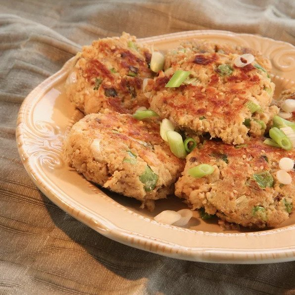

!Asian Salmon Patties!

This is such an easy recipe that I can throw together super fast at the end of a long, hard day. It packs a punch of flavor
with very little effort. My kids love this and request it often. Sometimes, I even make a few extra to go in their lunch boxes
the next day. This is such an easy recipe that I can throw together super fast at the end of a long, hard day. It packs a punch of flavor
with very little effort. My kids love this and request it often. Sometimes, I even make a few extra to go in their lunch boxes
the next day.
Ingredients
- 1 tablespoon sesame oil, or as needed
- 2 (5 ounce) cans salmon, drained and flaked
- 2 eggs
- ½ cup panko bread crumbs
- ¼ cup green bell pepper, diced
- ¼ cup green onions, diced
- 2 teaspoons finely minced fresh ginger
- 2 teaspoons finely minced fresh ginger
- 1 tablespoon sesame seeds
- 1 teaspoon Chinese five-spice powder
Directions
- Step 1 Heat sesame oil in skillet over medium heat until it bubbles around the tip of a spoon when dipped in.
- Step 2
Mix salmon, eggs, panko, bell pepper, green onions, ginger, soy sauce, sesame seeds, and five-spice powder together in a bowl. Form mixture into patties and set, evenly spaced, into the hot oil in the skillet.
- Step 3
Brown patties, 4 to 5 minutes. Flip and brown on the other side, 4 to 5 minutes more. Remove patties from pan and drain on a paper-towel lined plate to drain excess oil.
Return To Main Page